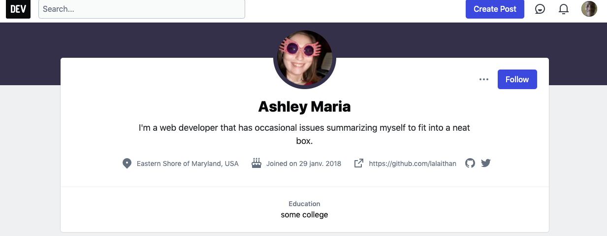

Programmers should write like Ashley Maria
and read for forward pedaling motion


If you are a programmer like Ashley then you are a writer because how could you make this piece of code work without punching your keyboard for printing the keywords of this language you have chosen into your favorite IDE. Unless that you use a voice-based IDE, which could be for you an innovative tech-enabled product to build, that’s what we all do as programmers, write code.
But writing literary pieces of text like Ashley is something I recommend to every programmer and software engineer because I do believe that being at ease in algorithmic concepts helps achieve amazing and creative writings. the other benefit of writing, for a software engineer or programmer, is that it structures your way of thinking and makes you stay focused on your topic of interest while journalizing your thoughts and making them more deep and precise.
Another reason why we software engineers and programmers should write is that we are at the first line when it is about pushing forward artificial intelligence with natural language processing. Then writing will help clearly understands the architecture of words and sentences and how their combination makes meanings. Of course, this exercise of writing will be better if it is associated with reading because as I have already said in this article writing and reading are like veil pedal
helping you move forward faster at a level where you will not need pedaling for running like this.
You may say you have no time for writing because as a software engineer your responsibility for this software to be shipped in a timely manner is huge and you are actually behind the timeframe as we often do with software projects. But that’s only at the beginning that you will have this feeling because the compound effect of habit is that it ends consuming less time
then write and read like Ashley have written this
and have read this article about Search engines and Mbenda
and these books
I am sure that you will love it more than how ashley loved this tweet
Thank you Ashley and continue being interested and loving writing because it will make you a better programmer.
PS: this article is part of the Greyio Heart Experiment